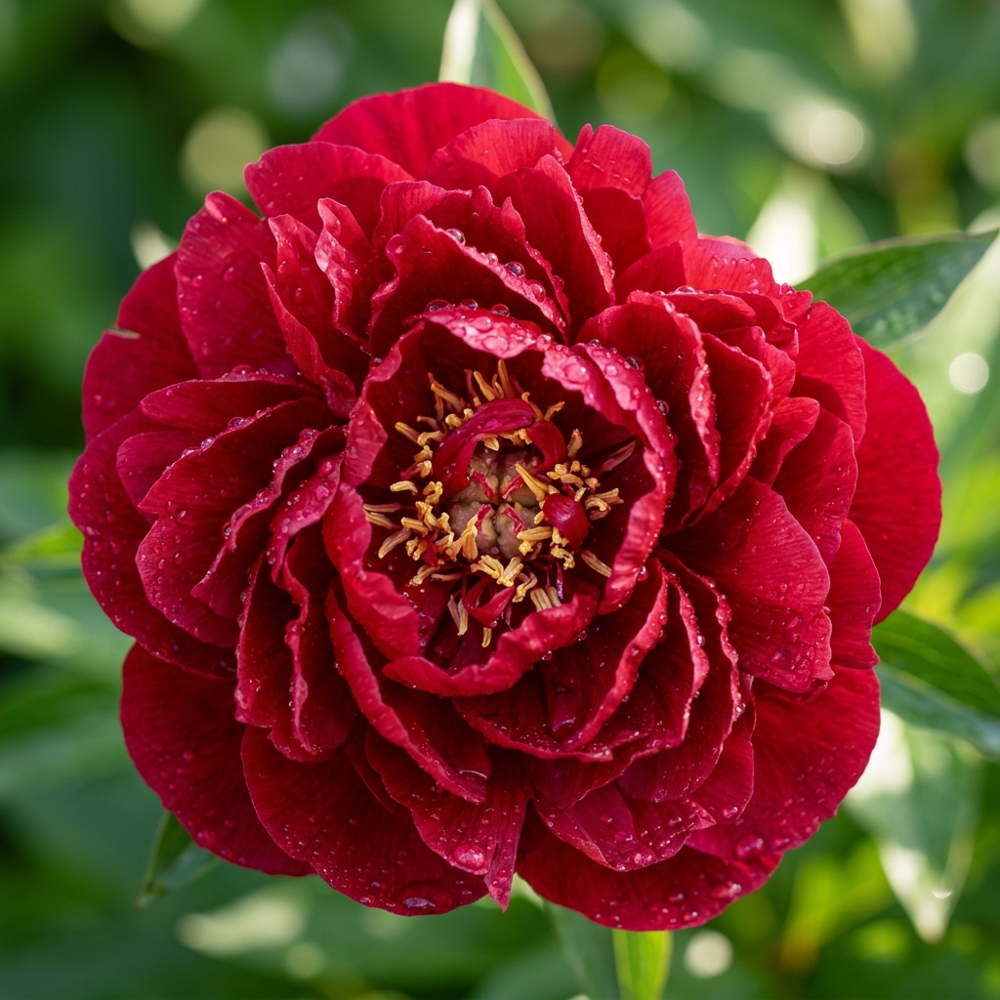

합천 핫들생태공원 작약 개화시기 2026 실시간 현황 및 주차 꿀팁
합천 핫들생태공원의 작약은 매년 5월 초순부터 중순까지 경남 지역을 화려하게 물들입니다. 2026년 올해는 평년보다 따뜻한 기온 덕분에 개화 속도가 조금 더 빨라질 것으로 예상되는데요. 붉은색, 분홍색, 흰색의 탐스러운 작약이 끝없이 펼쳐진 풍경은 마치 동화 속 한 장면을 연상케 합니다. 이번 포스팅에서는 실시간 개화 현황과 함께 인파를 피해 인생샷을 남길 수 있는 주차 전략을 상세히 정리해 드립니다.
1. 2026년 합천 작약 개화시기 정밀 예측
본격적인 축제 분위기가 고조되는 핫들생태공원의 작약은 보통 5월 5일 어린이날 전후로 첫 꽃망울을 터뜨리기 시작합니다. 기상청의 장기 예보와 최근 합천 지역의 평균 기온 데이터를 분석해 볼 때, 올해 만개 시점은 5월 12일에서 18일 사이가 될 것으로 보입니다.
작약은 만개 후 약 일주일 정도가 가장 아름다우며, 비바람이 불 경우 꽃잎이 쉽게 떨어질 수 있으니 방문 전 일기예보를 반드시 체크하셔야 합니다. 특히 오전 10시 이전의 부드러운 햇살 아래서 가장 생생한 꽃의 색감을 감상하실 수 있습니다.
끝없이 펼쳐진 합천 핫들생태공원의 작약 꽃물결 / AI 제작 이미지
2. 핫들생태공원 찾아가는 길 및 주차장 이용 안내
공원의 주소는 경남 합천군 합천읍 합천리 162-5 일원입니다. 황강변을 따라 조성된 공원이라 내비게이션에 '핫들생태공원'을 검색하시면 쉽게 찾으실 수 있습니다.
주차는 공원 내 마련된 임시 주차장을 이용할 수 있지만, 주말에는 이른 오전부터 만차되는 경우가 많습니다. 이럴 때는 인근 합천군청이나 황강 레포츠 공원 주차장을 이용하신 후 강변 산책로를 따라 약 10분 정도 걸어오시는 것을 추천드립니다. 걷는 길 또한 경치가 일품이라 지루함이 전혀 없습니다.
3. 인생샷을 위한 최고의 포토존 추천
가장 인기 있는 포토존은 단연 중앙 오두막 쉼터 주변입니다. 탐스러운 작약 꽃밭 한가운데 서 있는 오두막은 이국적인 분위기를 자아내는데요. 여기서 팁을 드리자면, 꽃밭 사이사이로 조성된 좁은 길을 활용해 꽃 속에 파묻힌 듯한 구도로 촬영해 보세요.
꽃을 꺾거나 밟지 않아도 충분히 풍성한 연출이 가능합니다. 또한, 황강을 배경으로 작약을 전경에 배치하면 시원한 물줄기와 화려한 꽃의 대비가 강조되어 훨씬 입체적인 사진을 얻을 수 있습니다.

클로즈업으로 담아낸 작약의 우아한 자태 / AI 제작 이미지
4. 방문 시 필수 준비물과 복장 가이드
5월의 합천은 한낮 기온이 꽤 높습니다. 그늘이 거의 없는 평지 공원이기 때문에 양산이나 챙이 넓은 모자는 필수입니다. 또한, 장시간 걷기 편한 운동화나 단화를 착용하시는 것이 좋습니다.
사진 촬영을 위해 밝은색 계열의 원피스나 셔츠를 입으시면 꽃의 색감과 대비되어 인물이 훨씬 돋보입니다. 자외선 차단제는 수시로 덧발라주시고, 수분 보충을 위한 생수 한 병도 꼭 챙기시기 바랍니다.
5. 인근 연계 관광지: 합천 영상테마파크
작약 구경을 마친 후 차로 약 15분 거리에 있는 합천 영상테마파크에 방문해 보세요. 1920년대부터 1980년대까지의 서울 거리를 재현해 놓은 이곳은 수많은 영화와 드라마의 촬영지로 유명합니다.
교복 체험이나 전차 탑승 등 즐길 거리가 많아 가족이나 연인과 함께 추억을 쌓기에 최적의 장소입니다. 특히 최근에는 모노레일을 타고 올라가는 청와대 세트장도 큰 인기를 끌고 있으니 놓치지 마세요.
여유롭게 거닐기 좋은 핫들생태공원 산책로 / AI 제작 이미지
6. 현지인이 추천하는 합천 3대 맛집
금강산도 식후경, 합천에 왔다면 황토한우는 꼭 맛봐야 합니다. 육질이 부드럽고 풍미가 깊기로 소문난 합천 한우는 전국에서도 손꼽히는 맛을 자랑합니다.
또한, 따뜻한 국물이 생각난다면 합천 돼지국밥을 추천드립니다. 맑으면서도 깊은 국물 맛이 일품입니다. 마지막으로 시원한 면 요리가 당긴다면 메밀 막국수를 전문으로 하는 식당들을 찾아보세요. 깔끔한 뒷맛이 여행의 피로를 씻어줄 것입니다.
7. 여행자를 위한 실시간 날씨 및 기온 데이터
합천 지역의 5월 평균 기온은 최저 12도에서 최고 25도 사이를 오갑니다. 일교차가 크기 때문에 가벼운 겉옷을 챙기는 지혜가 필요합니다.
자외선 지수는 대개 '높음' 단계 이상을 유지하므로 피부 보호에 각별히 유의해야 합니다. 미세먼지 농도는 대개 양호한 편이지만, 황강 주변은 꽃가루가 날릴 수 있으니 알레르기가 있는 분들은 미리 상비약을 준비하시는 것이 좋습니다.
8. 합천 작약 여행을 위한 최적의 방문 시간대
가장 추천하는 시간은 평일 오전 8시에서 10시 사이입니다. 단체 관광객이 도착하기 전이라 조용하게 꽃의 향기를 즐기며 사진 촬영에 집중할 수 있습니다.
만약 주말에 방문해야 한다면, 차라리 해가 지기 직전인 오후 5시 이후를 공략해 보세요. 노을빛을 받은 작약은 낮과는 또 다른 신비롭고 몽환적인 분위기를 자아냅니다. 주차 전쟁에서도 어느 정도 자유로워질 수 있는 시간대이기도 합니다.
9. 에디터가 전하는 마지막 여행 팁
합천 핫들생태공원은 단순히 꽃만 보는 곳이 아니라, 황강의 바람과 흙냄새를 맡으며 천천히 걷는 슬로우 투어에 최적화된 공간입니다. 서두르지 말고 천천히 발걸음을 옮기며 자연이 주는 선물을 만끽해 보세요.
쓰레기는 반드시 다시 가져가 주시고, 소중한 꽃들이 다치지 않게 배려하는 마음이 아름다운 여행지를 오랫동안 보존하는 길입니다. 이번 주말, 합천의 붉은 열정 속으로 떠나보시는 건 어떨까요?
#합천작약
#핫들생태공원
#합천가볼만한곳
#5월축제
#경남여행
#작약개화시기
#합천영상테마파크
#합천맛집
#국내여행추천
#인생샷명소